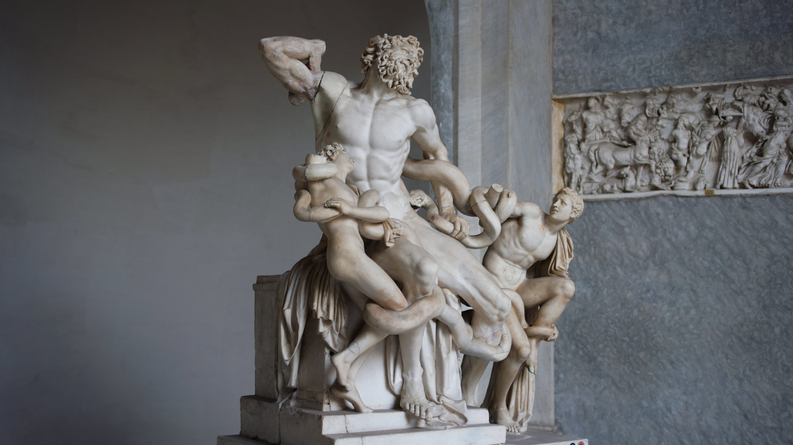

الاسم: يس وائل محمود
رقم الجلوس: 2103135
Lakoon & His Sons
يُعدُّ مجموعة نحتية lakoon من الأساطير الشعبية في مدينة رودس، حيث تدور الأسطورة حول كاهن يدعى لاكون العامل في معبد أفروديت، وله ولدين هما أنتيفانتس وثيمبرايوسيس اللذان يساعدانه في عمله داخل المعبد. ولكن كان الكاهن وأولاده يسخرون من الآلهة بدلاً من العمل الجاد داخل المعبد، فقررت الآلهة العقاب عليهم بإرسال ثلاثة ثعابين ضخمة للقضاء عليهم تعويذةً بالسخرية التي قاموا بها. فاضطر الكاهن وأولاده لمواجهة هجوم الثعابين والدفاع عن أنفسهم حتى أنهوا حياتهم بأيديهم. تأتي مجموعة النحتية المشهورة باسم lakoon بتصميمها الذي يعود للفنان اليوناني القديم أسلوب ليسبوس lysippic rhodian style، والذي يتميز بقدرته على التعبير عن العواطف وإظهار الندم والحزن على الوجوه، كما نجح الفنان في إبراز تشريح الأجسام التي تكافح وتتحدى وفي تصوير الثعابين. كما قدّم الفنان فكرة التكوين الهرمي وضعها على قاعدة مربعة وعلى هذه القاعدة توقيع الفنان. تتميز هذه المجموعة النحتية التي صنعها الفنان من الرخام بارتفاع 242 سنتيمتر بأنها موجودة حالياً في متحف الفاتيكان.
Farrenese bull

مجموعة نحتية مشهورة باسم "Farrenese Bull" التي تعود إلى القرن الثاني قبل الميلاد وتنتمي للعصر الهيلينستي. تصور هذه المجموعة أسطورة من أساطير مدينة رودس تحكي عن ولدين يحاولان الإمساك بثور لربط الملكة ديرس به وجرها وقتلها بسبب تنمرها الدائم عليهما، وتمثل المجموعة شكلاً هرمياً على قاعدة مربعة عليها توقيع الفنان. استخدم الفنان أسلوب Lysippic Rhodian لإظهار التعبيرات الانفعالية والتشريح الجسدي للثور وقوته وشد عضلات الولدين، وتمثل الملكة في محاولة للهروب. يرمز موضوع المجموعة النحتية إلى قيم الرودسيين والإغريق القديمة في ترسيخ العدل والعقاب لمن يخالفون القيم الأخلاقية، ويتجلى ذلك في عقوبة الولدين والملكة على تنمرها عليهم. تم صنع المجموعة النحتية من الرخام، ويعتبر ارتفاعها يبلغ 242 سنتيمترًا.